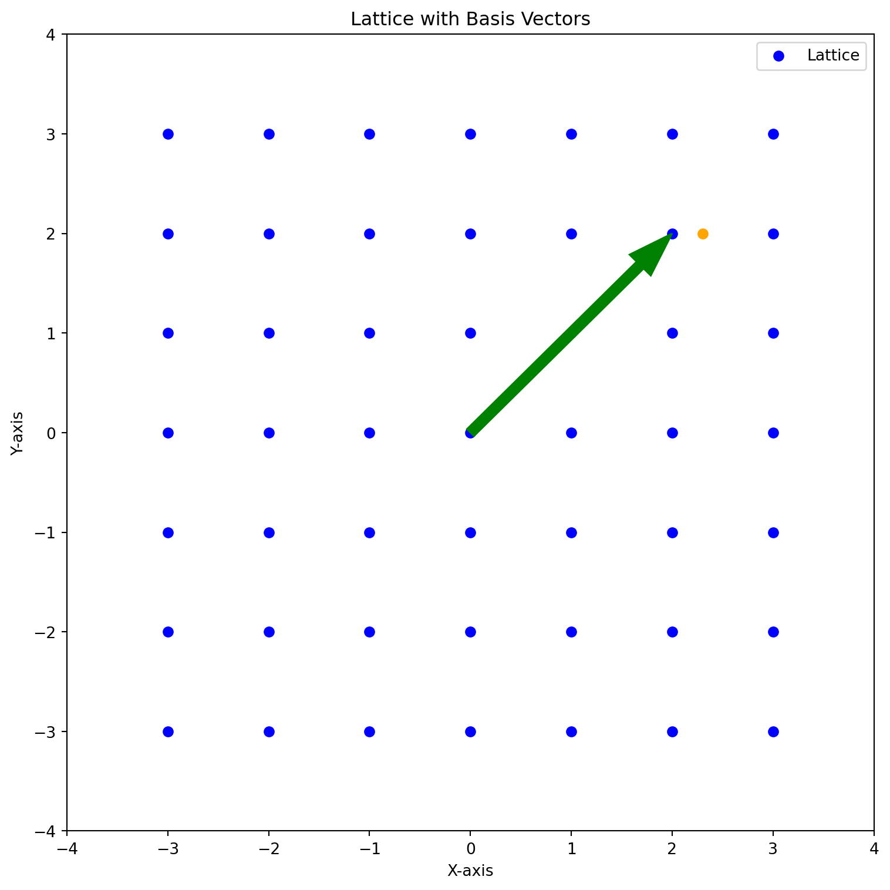

Shortest Vector Problem and Closest Vector Problem
cryptography
Author
Trevor Tomlin
Published
June 13, 2023
Shortest Vector Problem and Closest Vector Problem
Introduction
Lattice-based cryptography has emerged as a powerful tool in modern cryptography, offering security guarantees and resilience against attacks from both classical and quantum computers. At the heart of lattice-based cryptography lies the Shortest Vector Problem (SVP) and a related problem the Closest Vector Problem, a fundamental computational problem with wide-ranging implications. In this blog post, we will delve into them both, their impact on cryptographic systems, and their practical applications.
Shortest Vector Problem
Given a set of basis vectors which make up a lattice, the goal of the Shortest Vector Problem is to find the shortest non-zero vector in the lattice. The shortest vector is the vector with the smallest Euclidean norm. The Shortest Vector Problem is a hard problem to solve, and it is believed that there is no efficient algorithm to solve it. The Shortest Vector Problem is a NP-hard problem, meaning that it is at least as hard as any other problem in the class of NP problems.
Closest Vector Problem
The Closest Vector Problem is a related problem to the Shortest Vector Problem. Given a lattice and a target vector, the goal of the Closest Vector Problem is to find the closest vector in the lattice to the target vector. The Closest Vector Problem is also a hard problem to solve, and it is believed that there is no efficient algorithm to solve it. The Closest Vector Problem is also a NP-hard problem.
An example of two different basis pairs. The red basis pair is a good basis pair, while the green basis pair is a bad basis pair.
To illustrate the concept of good and bad basis vectors, let’s consider an example. We can visualize a lattice and its basis vectors using two pairs. The first pair consists of basis vectors that are nearly perpendicular, while the second pair comprises basis vectors that are nearly parallel. By examining the resulting lattices, we can observe the impact of the choice of basis vectors on the lattice structure and its security properties.
Bob gives Alice the bad basis. Alice picks a point on the lattice (2, 2) that represents her message. She then adds a small error to the point and sends that point to Bob. Bob then uses the good basis to decode the message.
Code
import numpy as npimport matplotlib.pyplot as plt# Basis vectorsbasis_1 = np.array([2, 0])basis_2 = np.array([0, 2])grid_size =3x_values = np.arange(-grid_size, grid_size +1)y_values = np.arange(-grid_size, grid_size +1)lattice_points = np.array([(x, y) for x in x_values for y in y_values])fig, ax = plt.subplots(figsize=(8, 8))ax.scatter(lattice_points[:, 0], lattice_points[:, 1], color='blue', label='Lattice')point_1 = np.array([2, 2]) # Point on lattice representing messagepoint_2 = np.array([2.3, 2]) # Message with error addedax.arrow(0, 0, point_1[0], point_1[1], color='green', width=0.1, length_includes_head=True)ax.scatter(point_2[0], point_2[1], color='orange')ax.set_xlim([-grid_size -1, grid_size +1])ax.set_ylim([-grid_size -1, grid_size +1])ax.set_xlabel('X-axis')ax.set_ylabel('Y-axis')ax.set_title('Lattice with Basis Vectors')ax.legend()plt.tight_layout()plt.show()

An example of the encoded message and error added to point
This is very similar to how the Goldreich–Goldwasser–Halevi (GGH) lattice-based cryptosystem works.
Dimensionality in Practice
In practice, lattice-based cryptosystems operate in high-dimensional spaces, which greatly enhances their security. The dimensionality of the lattice significantly increases the computational complexity of finding the shortest vector without access to the private key. As the dimensions increase, the search space for potential shortest vectors expands exponentially, making exhaustive search and other classical techniques infeasible. Quantum computers, despite their potential advantages, still face formidable challenges in solving the shortest vector problem for high-dimensional lattices. Their limited performance and the exponential growth of the problem’s complexity ensure that lattice-based cryptosystems remain secure against both classical and quantum attacks. Therefore, the use of high-dimensional lattices strengthens the security of lattice-based cryptosystems and solidifies their position as robust post-quantum cryptographic solutions.
Applications
Kyber, based on the pq-crystals framework, is a lattice-based post-quantum cryptosystem that offers secure communication through its Key Encapsulation Mechanism (KEM) and digital signature schemes. It provides robust security against attacks from classical and quantum adversaries by leveraging the hardness of lattice problems. Kyber strikes a balance between security and efficiency, allowing users to choose parameters based on their specific requirements. With its promising security properties and competitive performance, Kyber has emerged as a strong contender in the field of post-quantum cryptography.
Lattice-based cryptography finds applications in various domains. One notable application is Fully Homomorphic Encryption (FHE), which enables computations on encrypted data without the need for decryption. FHE has applications in privacy-preserving computations, secure outsourcing of computations, and secure machine learning.
Conclusion
In summary, the use of high-dimensional lattices in lattice-based cryptosystems provides a robust defense against attacks. The exponential growth of the search space, coupled with the limitations of classical and quantum computers, ensures that finding the shortest vector without the private key remains a nearly impossible task. This characteristic reinforces the post-quantum security offered by lattice-based cryptography and solidifies its position as a promising and resilient approach in the realm of modern cryptographic systems.